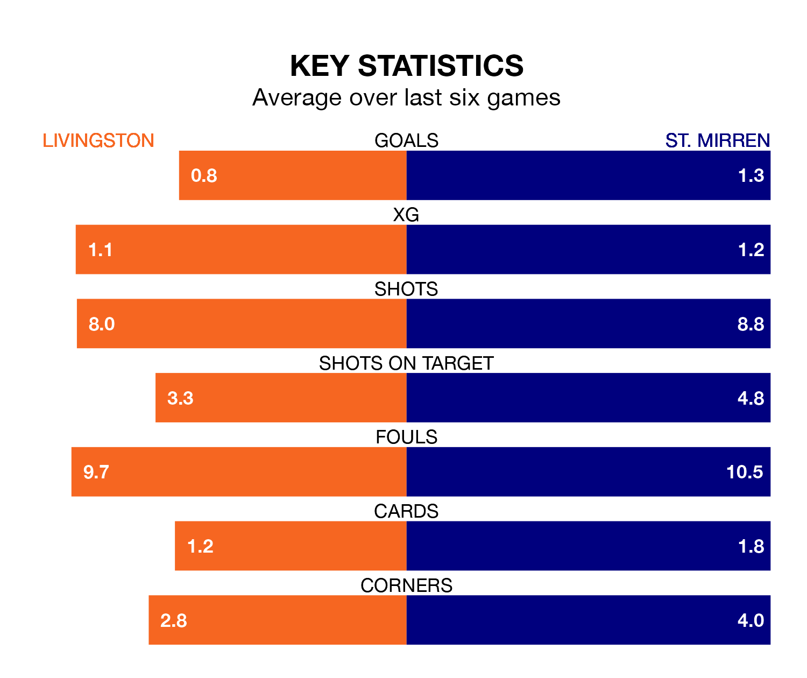

Livingston are on a terrible run ahead of hosting St. Mirren at the Tony Macaroni Arena on Saturday, with just one point collected from their last six games.
Livingston have picked up just one draw in their last six Premiership games, and face a Buddies side whose last six games have brought three wins and three losses.
Livingston are bottom of the table after 25 games, of which they have won two and drawn seven, earning 13 points.
St. Mirren are seven places ahead of the hosts in fifth, with 10 wins and five draws putting them on 35 points.
In the last 10 years, Livingston and St. Mirren have played each other on 31 occasions. Livingston won eight of them, St. Mirren 13, and they drew 10 times.
On average, Livingston scored 1.2 goals and the Buddies 1.3 in those matches.
Their last meeting was on November 25, when St. Mirren won 1-0 at home.
With 15 goals in 25 games so far this season, Livingston are the league's lowest scorers with 0.6 goals per game. And they are conceding more than average, letting in 42 goals at a rate of 1.7 per game.
The Buddies are also below average scorers, with 1.2 goals per game, compared to a league average of 1.3. They have also conceded 1.2 goals per game.
In Zachary Hemming, the away team can rely on one of the league's safest pair of hands. He has kept nine clean sheets in his 25 appearances this season in the Premiership.
In Livingston's net, Shamal George has four clean sheets in 19 games. He has conceded a goal every 63 minutes, 40% more often than the 87 minutes between goals for Hemming.
Livingston's last match was on February 7, a 1-0 loss against Kilmarnock.
St. Mirren beat Dundee 2-0 last time out, also on February 7, with Mikael Mandron and Toyosi Olusanya on the scoresheet.
Updated: 11:18 (UTC), 08/02/24